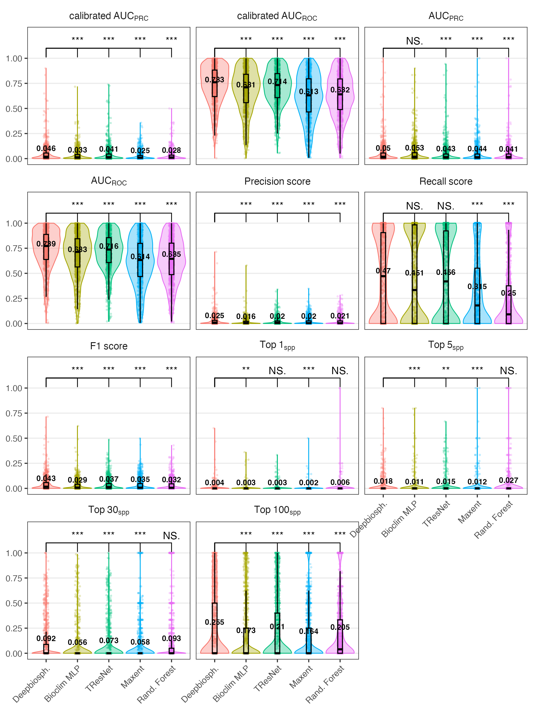
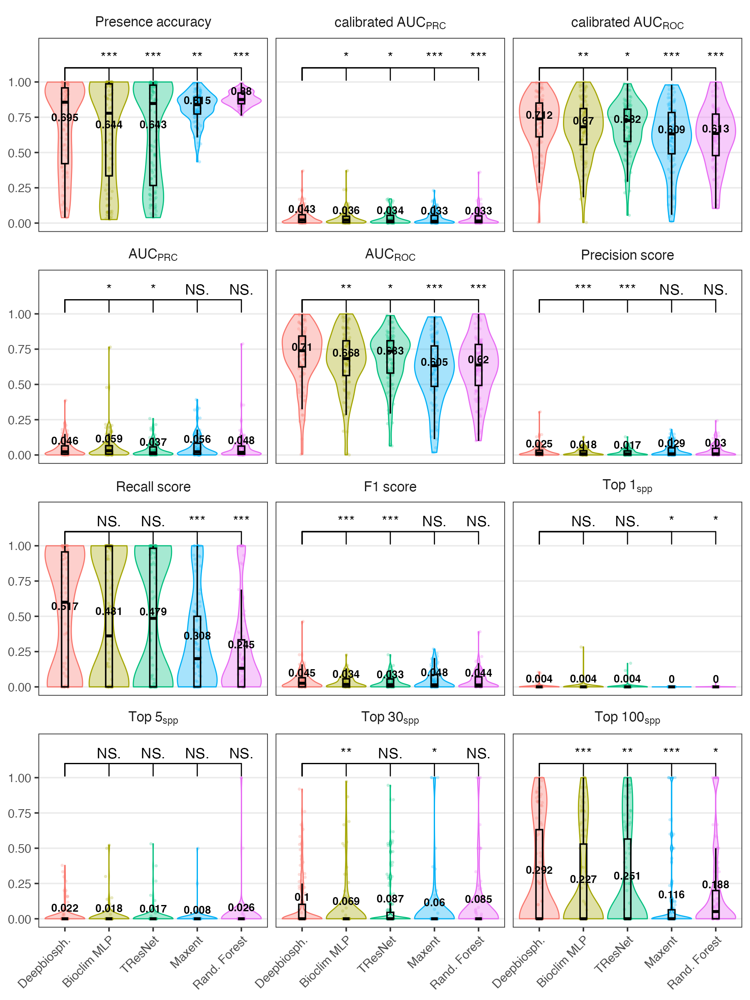
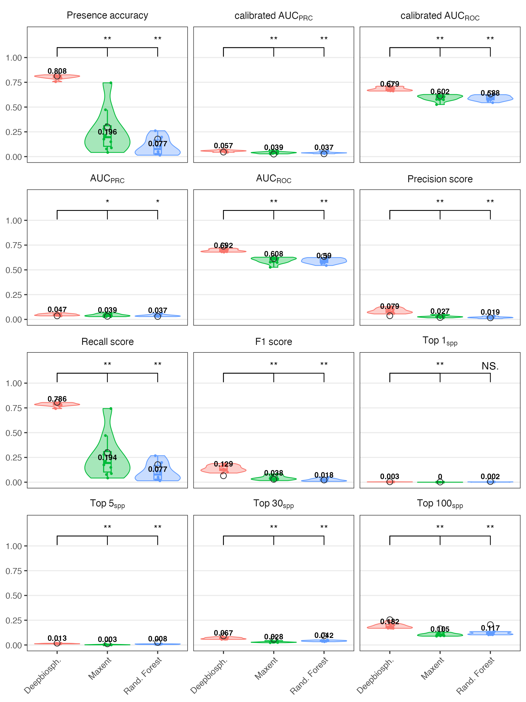
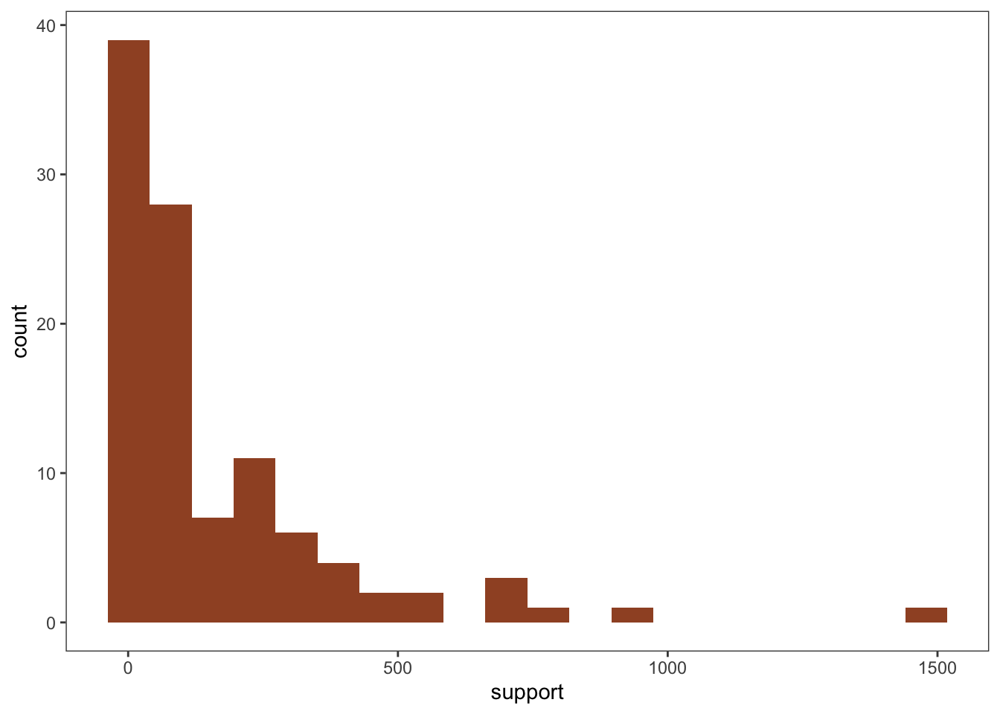

Accuracy metrics
Uniform train-test split results
Full dataset

Floral resources only

Spatial cross validation results (full dataset)

List of floral resource species
Species support

Accuracy metrics definitions
Text from supplemental material of Gillespie et al. 2024.
Binary classification metrics
Threshold all probabilities ≥0.5 as present and <0.5 as absent for these metrics
Presence accuracy (Zero one accuracy?) The fraction of examples where the correct species observed at that location was predicted as present
Precision Measures how many species predicted to be present were actually present.
Recall Measures how many of the true species present are predicted as present.
F1 score The harmonic mean of precision and recall and represents a conservative mean of the two (i.e. is more affected by low values).
Discrimination metrics
In order to take into account the effect of thresholds, discrimination metrics measure binary classification ability across a wide range of thresholds in order to calculate an SDM’s performance across a wide range of presence thresholds and describe the relationship between threshold change and performance change.
AUC ROC Area under the receiver operating characteristic curve averaged across species
AUC PRC Average area under the precision-recall curve averaged across species
Calibrated AUC A model which has extremely low predicted probabilities can still nevertheless have a high AUCROC if within its range of predicted probabilities said model has good sensitivity and specificity for that class.
This means that it’s possible to have a model that never predicts a species as present with the standard presence/absence threshold of 0.5 yet still has a high average AUCROC.
To correct for this, we also introduce a calibrated area under the curve score where the chosen thresholds are linearly interpolated values between 0 and 1.
Ranking metrics
Top-K (top 1, 5, 30, 100) These metrics measure how many times the correct species was correctly predicted within the top-K highest-ranked species within a given image (where, for example, K=5 would be the 5 species with the highest probability of presence).